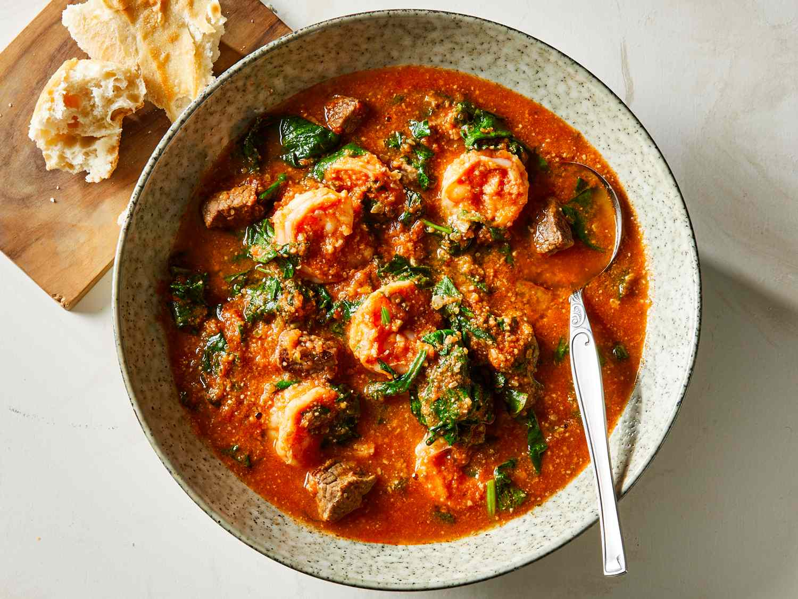

Hearty soup
Egusi Soup

Cooking steps
- Cook your meat, fish, or prawns with seasoning until tender.
- Heat palm oil and fry the onion and pepper until fragrant.
- Stir in the ground egusi and cook until it thickens.
- Add stock, crayfish, and locust beans to deepen the flavour.
- Simmer gently, then add spinach or bitter leaf at the end.
- Serve with pounded yam, fufu, or rice.